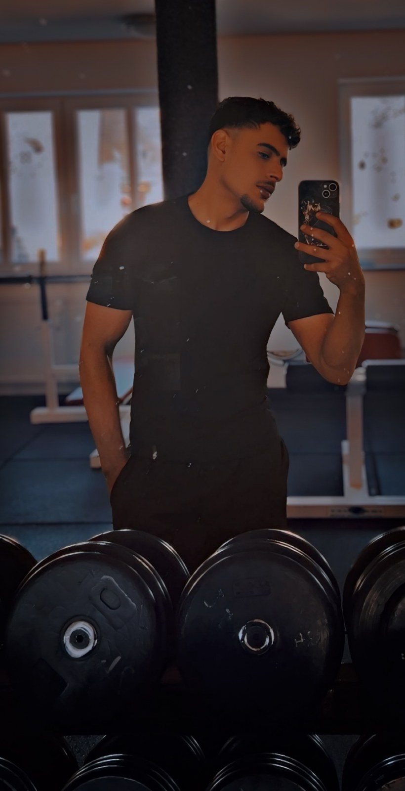

💱
الفوركس Forex
التعرف على أزواج العملات، النقاط (Pips)، قراءة الرسوم البيانية، وأساسيات إدارة المخاطر.
أنا مُعاذ عبدالقادر، مهتم بالتداول والفوركس والعملات الرقمية. أشارك رحلتي في التعلم، وأهدف إلى مساعدة المبتدئين على فهم الأساسيات وتطوير مهاراتهم بوعي ومسؤولية.

كل رحلة تبدأ بخطوة، والأهم أن نتعلم قبل أن نخاطر.
أنا مهتم بعالم الأسواق المالية، وأعمل على تطوير معرفتي بالتداول وفهم حركة الأسواق وإدارة المخاطر. أؤمن أن التعلم المستمر والصبر أهم من البحث عن نتائج سريعة.
أريد مشاركة ما أتعلمه بطريقة بسيطة وواضحة، حتى يتمكن المبتدئون من التعرف على المفاهيم الأساسية واتخاذ قراراتهم بعد البحث والتعلم.
محتوى تعليمي للتعرف على الأسواق والأدوات، وليس وعودًا بالربح.
التعرف على أزواج العملات، النقاط (Pips)، قراءة الرسوم البيانية، وأساسيات إدارة المخاطر.
فهم أساسيات سوق العملات الرقمية، تقلب الأسعار، وأهمية البحث قبل اتخاذ أي قرار.
التعرف على التحليل الفني وأدوات المساعدة، مع اختبار الأفكار وفهم حدودها قبل استخدامها.
أهتم بالتعرف على الأدوات الرقمية والأنظمة التي قد تساعد في تنظيم عملية التعلم وتحليل الأسواق.
يمكن تخصيص هذا القسم لشرح تجربتك مع GO OS، والمصادر أو الأدوات التي تستخدمها. يجب التحقق من أي خدمة قبل الاشتراك بها، وعدم اعتبار الإشارات أو مخرجات الذكاء الاصطناعي ضمانًا للربح.
تابع رحلتي ومحتواي، وشارك الأسئلة والأفكار التي تساعدنا على التعلم.
مفاهيم مبسطة للمبتدئين ومصطلحات التداول المهمة.
ملاحظات تعليمية عن الرسوم البيانية والتحليل وإدارة المخاطر.
مجتمع قائم على التعلم والاحترام، بعيدًا عن الوعود غير الواقعية.
يسعدني التواصل ومشاركة رحلة التعلم معك.